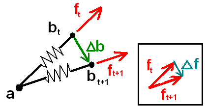
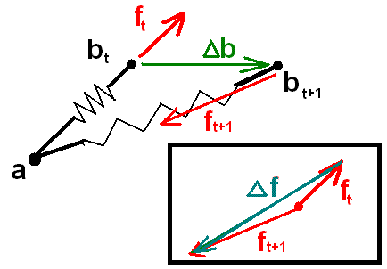

In 3D applications, spring systems can be used to model many types of objects including jello, cloth, hair, water surfaces, soft bodies. Springs are also used in penalty based collision resolution and some interfaces for user interaction/manipulation. Therefore, an application benefits from being able to properly simulate a spring. This becomes challenging when simulating strong springs over discrete timesteps. Some implementations make use of the derivative of the spring equation. This document derives and explains these derivatives. (Admittedly, this would benefit from more pictures and more thorough explanations in places. No time.)
There are a number of things this document does not explain because better writeups already exist elsewhere. This document assumes you are already familiar with hooke's law and the spring equation, numerical integration, stability issues with stiff systems, and how to construct spring networks to simulate various objects.
You might have noticed that research papers often present discrete time step (integration) techniques (such as implicit/backward integration). However, they assume you are able to figure out your own equations and their derivatives or jacobians for the system you are trying to implement. That's where this document comes in. Here we help explain the derivative of the spring equation. However, it is assumed that you remember your first year calculus and linear algebra.
Hooke's formula tells us the force acting on a spring at a given configuration (positions and velocities of endpoints). The derivative of this tells us how the force will change as we start to change this configuration. For simplicity, assume one endpoint is fixed. The force (3D vector) exerted by the spring is determined by the other endpoint. Note that a point in a 3D space has 3 degrees of freedom of movement, The way the force changes depends on how th endpoint is moved. To illustrate what this means consider the following picture:

Change in Force (delta f) for a Given Change in Spring Direction (delta b).
The change in force in this case is parallel to the change we made to the spring endpoint b which we rotated about fixed endpoint a. Notice that if we both change the length and the direction of the spring the resulting change in force is quite different:

Change in Force (delta f) for Change in Spring Direction and Length (delta b).
At the start of this process we don't know what our change in the spring endpoints will be. Somehow the derivative has to capture how force changes for any possible change in the position. (Also there will be damping and therefore velocity derivatives to worry about, but that comes later.) Unlike first year calculus, the derivative is not a scalar. Instead, the derivative is a matrix of partial derivatives that cover the changes for any direction. Referring back to the above spring we could compute a 3x3 matrix dfdb, that would tell us how the force would change for a small change in b (in whatever dirction). In particular, delta-f is simply dFdB times delta-b. Such a matrix dFdB is often referred to as a Jacobian. Because html lacks a math equation system, these concepts and all the math equations are written up in the separate MS word document: dfdv.doc.
Perhaps you couldn't be troubled with the math in the writeup. That's ok. The same 3x3 matrix can also be generated using simple, geometrical intuition. First align the spring along a major axis (say x), then solve the force derivatives for change in length and for change in direction separately. The change in length derivative (which is just the spring constant k) goes into the upper left entry M[0,0]. Meanwhile the change in direction derivative (((rest/length)-1)*k) provides a value for the other two diagonal entries. All other off-diagonal entries are just 0. So now we know our force derivative for springs that happen to be aligned with the x axis, but we cant count on this being the case during a simulation. One way to think of it is to solve whatever needs to be solved in the spring's coordinate space, by converting things to that space and then converting the result back. Consequently, dFdB is simply of the form RMR^T where R rotates the spring to be aligned with the x-axis. The algebra to show this is the same is left as an exercise.
Enough with the theory, what would this look like to a programmer. Unlike the ms-word writeup, in code we follow the math textbook convention and use 'x' for position, 'v' for velocity, and 'f' for force. Therefore we write the force derivatives as dfdx (change in force for change in position) and dfdv (change in force for change in velocity). From all that math, the resulting code you would use for your springs is simply:
inline float3x3 dfdx_spring(const float3 &dir,float length,float rest,float k)
{
// dir is unit length direction, rest is spring's restlength, k is spring constant.
return ( (I-outerprod(dir,dir))*(rest/length) - I) * -k;
}
inline float3x3 dfdx_damp(const float3 &dir,float length,const float3& vel,float damping)
{
// inner spring damping, vel is the relative velocity of the endpoints.
return (I-outerprod(dir,dir)) * (-damping * -(dot(dir,vel)/length));
}
inline float3x3 dfdv_damp(const float3 &dir,float damping)
{
return outerprod(dir,dir) * damping;
}
To keep it clear we moved these into their own functions and separated the damping from the regular spring force. Also note, that a small modifications to these equations can help with stability for certain integration approaches.
Baraff and Witkin's SIGGRAPH 98 paper "Large Steps in Cloth Simulation" first presented backward integration for cloth simulation. In a nutshell the technique updates a spring network by applying the forces from the next frame to the current system instead of using the forces from the current frame. How can that be when we don't know those values yet? That is why this integration strategy is more complicated, you have to "solve" for that. In other words you have to find the find the future state of a system whose forces at that time would be just the right amount to have brought you from your current state to this one. This is called "backward integration" or "backward Euler". Here the derivatives are used to construct the system of equations. Their paper shows the abstracted high-level formulas, but skips some details including what the derivatives are. Therefore, learning about the spring derivative helps to understand (and potentially implement) their system.
Occasionally in practice, you may want to modify the equations your system uses. This section describes one example that's based on observations in the cloth community but is applicable to similar systems.
The backward integration used for cloth simulation provides superior stability over forward euler systems that ignore the spring derivative and don't consider how the forces change over the timestep. Although, the equations described above enable more stable systems there is a limit to how stiff the systems can be. Its possible to have a system that simulates just fine most of the time, but occasionally configurations arise that cause the solver to fail and return an error. It has been widely noticed that stretch is more stable than compression. This doesn't explain where exactly and why backward Euler can lose its stability. Baraff's initial paper doesn't include these details. Instead they suggest reducing the stepsize and trying again if convergence doesn't occur. Unlike offline cloth simulation for movies, game applications like to get a usable result within a given amount of processing time. You don't want to have to recompute forces and derivatives and call the conjugate gradient function multiple times per frame. Therefore, it would be nice to understand what's going on here. I've never seen anybody describe specifically what the issue is, so I'm going to provide a brain-dead simple explanation and solution to it here. (its tough to explain in words, but at least i'll try)
Recall that we compute a spring's force and its derivative at the beginning of a timestep and that's all the information that is used to update the system. The derivative indicates the slope in the vicinity of the current state and may not accurately represent how things change over larger distances. Even though the force exerted by a compressed spring is no more than the force exerted by a spring stretched the same amount, it is the derivative of this force that is more sensitive to change. dfdx has a singularity as spring's length goes to zero. But you don't even have to reach that singularity before badness happens. Keep in mind that backward integration finds a next state whose forces in that state bring the system from the current to the next. Say that due to other constraints and forces from a simulation an endpoint of some compressed spring is forced to move orthogonal to the direction of the spring. We cant just move the endpoint the amount required to compensate for the external force. As the the endpoint of the compressed spring is moved there is now additional force (from the spring itself) that wants to move it in that same direction. So then we have to move further in that direction to overcome it. If one moved far enough in that direction, the force added by the spring along that direction would decrease in reality. Unfortunately, such information is not incorporated. So we end up having to move a longer distance in order to reach a resulting state where the final combined calculated force balances the amount we had to move. You can imagine a feedback loop that doesn't end soon enough since the derivitive that was computed says the repulsion force will always become greater as you keep going in that direction. Technically a real solver (conjugate gradient or whatever you use) iterates differently, but the consequence is the same. More specifically, such a solver is able to jump out to a more distant state since that more distant state is falsely assumed to have a larger force associated with it which is used to justify the big jump. By understanding what is happening it is easy to come up with a simple solution. The easiest thing to do is just clamp this component of the derivative for that spring and instead use the code:
inline float3x3 dfdx_spring(const float3 &dir,float length,float rest,float k)
{
// dir is unit length direction, rest is spring's restlength, k is spring constant.
return ( (I-outerprod(dir,dir))*Min(1.0f,rest/length) - I) * -k;
}
So if the spring is compressed, we don't scale dfdx accordingly thus removing the offending orthogonal contribution. This "magic sauce" equation makes for a rock-solid stable stiff-spring network simulator just using simple hooke's law for springs and plain-old backward Euler.
Chio and Ko's research propose using a variation to Hooke's law when the springs are compressed. I think they recognized that some sort of potential stability problem exists with compression. Their cloth system makes some enhancements. After a point, they suggest a more realistic response curve by decreasing the spring force with additional compression. It makes total sense since in real life, crumpled up clothing would not store much potential energy. Furthermore, they use second-order BDF which improves the accuracy of the integration step. Both of these happen to help avoid the instability caused by compression using the unaltered formula. Certainly this is a better system at least for high-end or off-line cloth simulation, and perhaps even real-time simulation. Although there are different applications, other than cloth, that do try to simulate systems that are built with actual springs which do require increasing forces and additional energy to compress. Therefore, its always a good idea to understand the landscape of the functions you are integrating.
Because its so easy to understand, spring systems are the ideal first application to study in order to gain familiarity with differential equations for 3D functions. Learning a little bit more vector calculus can open up a number of new doors in game physics and simulation - not just for springs. Sure, these areas can be intimidating since they can appear to involve scary looking equations. However, as we've seen by cracking open the spring derivative, all this stuff breaks down into very simple understandable things.